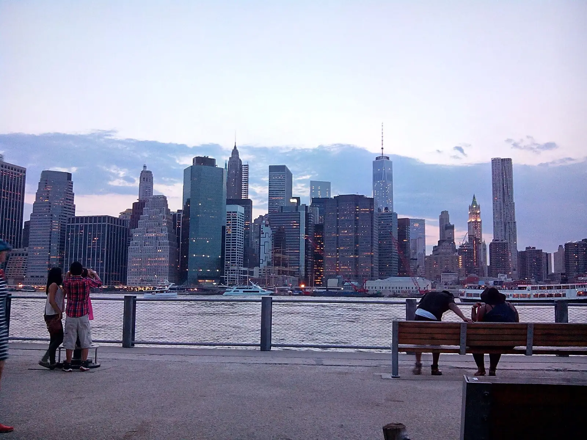

New York City · family hotel rooms
NYC hotel rooms that fit a family
Researched with AI (Miles Rowan) · sources linked and dated · How we check
16 hotels sorted by the room you need: bunk beds, two queens, a suite with a door, connecting rooms, a kitchen or free breakfast.
Family of 4 (2 adults + kids 5, 8) · Fri–Sun, Jan 22–24, 2027
About $249–$588 a night
Cheapest room Google Hotels showed for 4 at each hotel, seen Nov 21–27, 2026. It may not be the family room named here. NYC hotel tax and any nightly fee are extra. Estimate, not a quote.
Jump to the room you need
- Bunk beds 4 hotels, from ≈ $202
- 2 queens 4 hotels, from ≈ $265
- Separate bedroom 6 hotels, from ≈ $249
- Connecting 4 hotels, from ≈ $270
- Kitchen 5 hotels, from ≈ $336
- Free breakfast 2 hotels, from ≈ $265
- Sleeps 5+ 7 hotels, from ≈ $202
Main catch: many NYC "two-bed" rooms are two doubles, and many "suites" have no door. Check both before you book.
Room facts read November 27, 2026 on each hotel's page or a named booking site. Research, not our own stays.

Coming for the holidays? Christmas in New York City with kids, free and paid
All 16 hotels at a glance
Sorted by price. The price is the hotel's cheapest room for 4 on Google, not always the family room. Tap a hotel for its beds, door, kitchen and the catch.
| Hotel | Cheapest room for 4, a night | Family room | Beds | Sleeps |
|---|---|---|---|---|
| Paramount Times SquareTimes Square | ≈ $202 (Fri only) | Classic Quadruple room | 2 sets of twin bunk beds (4 beds) | 4 (quadruple); 6 (6-bed room) |
| The New Yorker, a Wyndham HotelPenn Station / Herald Square | ≈ $249 | Family Suite | 2 double beds in the bedroom plus a sofa bed in the living area | 4-6 |
| The Empire HotelLincoln Center / Upper West Side | ≈ $254 | Junior Suite, Two Double Beds | 2 double beds plus a pull-out sleeper sofa | Up to 4 |
| Hyatt Place Long Island CityLong Island City, Queens | ≈ $265 | Room with 2 queens and a sofa bed | 2 queen beds plus a double sofa bed | Listed for 6 |
| Motto by Hilton New York City ChelseaChelsea | ≈ $270 | Room with 4 twin bunk beds | 4 twin beds as bunks | 4 (bunk room) |
| Riu Plaza Manhattan Times SquareTimes Square, 47th St | ≈ $294 | Deluxe two Queen beds | 2 queen beds | Not stated on the hotel's page (a tour operator lists the two-queen room for 4) |
| Riu Plaza New York Times SquareHell's Kitchen, 46th St and 8th Ave | ≈ $327 | Deluxe family double beds with sofa bed | Double beds plus a sofa bed | Not stated on the hotel's page |
| Radio City ApartmentsRockefeller Center / Times Square | ≈ $336 | Two-bedroom apartment | Listings disagree: 1 queen, 2 twins and a double sofa bed (Travelocity) or 1 full, 2 twins and a sofa bed (Suiteness) | 5-6 (listings differ) |
| The Fifty SonestaMidtown East | ≈ $344 | One-Bedroom Apartment | Bedroom with a closed door; sleeper sofa in a living room that also has a door | Not stated |
| TRYP by Wyndham Times Square / MidtownPenn Station / Midtown West | ≈ $355 | Family Room | 2 queen beds, a twin bunk bed and a twin sofa bed | Listed for 8 |
| New York Marriott MarquisTimes Square | ≈ $412 | Family Connector | 2 bedrooms: a king in one, 2 doubles in the other, plus a sofa bed | Not stated |
| Homewood Suites Midtown Times Square-SouthMidtown South, near Penn Station | ≈ $475 | Two Queen Studio | 2 queen beds in a studio | 4 (studio); some two-queen rooms are listed for 5 |
| Lotte New York PalaceMidtown East | ≈ $571 | Palace Family Suite | 2 bedrooms: a king plus a sofa bed in one, a king in the other | 6 (listing) |
| Hotel BeaconUpper West Side | ≈ $588 | Deluxe Suite, Two Double Beds | Bedroom with 2 double beds; queen sofa bed in a separate living room | 4 (one-bedroom suite); 6 (two-bedroom suite) |
| NU Hotel BrooklynBoerum Hill, Brooklyn | Check live rate | Bunk-Bed Suite | 1 queen bed plus twin bunk beds | Described as right for a family of 4; number not stated |
| The Kimberly HotelMidtown East | Check live rate | Luxury One-Bedroom Suite with Two Full Bathrooms | King bed in the bedroom; queen sofa sleeper in the living room | Not stated |
Bunk beds
Bunk rooms let each child have a bed without paying for two rooms. Most NYC bunk beds are twins.
- Paramount Times Square · Times Square: Classic Quadruple, 4 twin bunks · cheapest room for 4: ≈ $202 Friday only
- Motto by Hilton New York City Chelsea · Chelsea: 4 twin bunk beds, sleeps 4 · cheapest room for 4: ≈ $270 a night
- TRYP by Wyndham Times Square / Midtown · Penn Station / Midtown West: Family Room: 2 queens, bunk and sofa bed · cheapest room for 4: ≈ $355 a night
- NU Hotel Brooklyn · Boerum Hill, Brooklyn: Queen + twin bunks · check live rate
Check before booking: Ask the age or height limit for the top bunk and whether there is a rail.
Two queen beds
Many NYC "two-bed" rooms have two doubles. A double (full) is about 54 inches wide; a queen is about 60.
- Hyatt Place Long Island City · Long Island City, Queens: 2 queens + sofa bed · cheapest room for 4: ≈ $265 a night
- Riu Plaza Manhattan Times Square · Times Square, 47th St: Deluxe two Queen beds · cheapest room for 4: ≈ $294 a night
- TRYP by Wyndham Times Square / Midtown · Penn Station / Midtown West: Two-queen room or Family Room · cheapest room for 4: ≈ $355 a night
- Homewood Suites Midtown Times Square-South · Midtown South, near Penn Station: Two Queen Studio · cheapest room for 4: ≈ $475 a night
Check before booking: On the booking page, look for the word "queen". "Two beds" often means two doubles.
Suites with a separate bedroom
A separate bedroom lets kids sleep while parents stay up. Many "suites" are one big room.
- The New Yorker, a Wyndham Hotel · Penn Station / Herald Square: Family Suite with a separate bedroom · cheapest room for 4: ≈ $249 a night
- Radio City Apartments · Rockefeller Center / Times Square: Two-bedroom apartment · cheapest room for 4: ≈ $336 a night
- The Fifty Sonesta · Midtown East: One-Bedroom Apartment, 790 sq ft · cheapest room for 4: ≈ $344 a night
- Lotte New York Palace · Midtown East: Two-bedroom Family Suite, 2 bathrooms · cheapest room for 4: ≈ $571 a night
- Hotel Beacon · Upper West Side: Bedroom with 2 doubles; sofa bed in living room · cheapest room for 4: ≈ $588 a night
- The Kimberly Hotel · Midtown East: One-bedroom suite with two full bathrooms · check live rate
Check before booking: Look at the floor plan or photos for a real door, and ask who sleeps on the sofa bed.
Connecting rooms
Two rooms joined by an inside door give two bathrooms and more beds.
- Motto by Hilton New York City Chelsea · Chelsea: Connecting rooms listed · cheapest room for 4: ≈ $270 a night
- TRYP by Wyndham Times Square / Midtown · Penn Station / Midtown West: Listed as available (request) · cheapest room for 4: ≈ $355 a night
- New York Marriott Marquis · Times Square: Family Connector: 2 rooms, 2 bathrooms, booked as one room type · cheapest room for 4: ≈ $412 a night
- Homewood Suites Midtown Times Square-South · Midtown South, near Penn Station: Connecting rooms listed by Hilton · cheapest room for 4: ≈ $475 a night
Check before booking: Ask whether the connection is guaranteed at booking, and get it in writing.
A forum poster reported: A regular forum poster said a Hilton booking with "confirmed" connecting rooms was not connecting at check-in in January 2026. Tripadvisor forum thread (a forum post, not checked by us).
Prices: family of 4, Fri–Sun, Jan 22–24, 2027, Google Hotels, seen Nov 21 and Nov 27, 2026. Not quotes.
Kitchen or kitchenette
A kitchen or kitchenette saves on breakfasts and early dinners with tired kids.
- Radio City Apartments · Rockefeller Center / Times Square: Kitchenette · cheapest room for 4: ≈ $336 a night
- The Fifty Sonesta · Midtown East: Full kitchen with stovetop · cheapest room for 4: ≈ $344 a night
- Homewood Suites Midtown Times Square-South · Midtown South, near Penn Station: In-room kitchen · cheapest room for 4: ≈ $475 a night
- Hotel Beacon · Upper West Side: Kitchenette with stove · cheapest room for 4: ≈ $588 a night
- The Kimberly Hotel · Midtown East: Kitchenette, no stove listed · check live rate
Check before booking: "Kitchenette" can mean just a fridge and microwave. Check for a stovetop if you plan to cook.
Free breakfast
Free breakfast can save a family of 4 a real amount over a few days.
- Hyatt Place Long Island City · Long Island City, Queens: Free breakfast buffet · cheapest room for 4: ≈ $265 a night
- Homewood Suites Midtown Times Square-South · Midtown South, near Penn Station: Free hot breakfast · cheapest room for 4: ≈ $475 a night
Check before booking: Check it is included in your rate, and the hours.
Rooms for 5 or more
Most NYC rooms sleep 4. These list 5 or more, often counting a sofa bed. Prices are for 4; check the live rate for your party.
- Paramount Times Square · Times Square: Private 6 Bed Room, 6 twin bunks · cheapest room for 4: ≈ $202 Friday only
- The New Yorker, a Wyndham Hotel · Penn Station / Herald Square: Family Suite, sleeps 4-6 · cheapest room for 4: ≈ $249 a night
- Hyatt Place Long Island City · Long Island City, Queens: 2 queens + sofa bed, listed for 6 · cheapest room for 4: ≈ $265 a night
- Radio City Apartments · Rockefeller Center / Times Square: Two-bedroom apartment, sleeps 5-6 (listings differ) · cheapest room for 4: ≈ $336 a night
- TRYP by Wyndham Times Square / Midtown · Penn Station / Midtown West: Family Room, listed for 8 · cheapest room for 4: ≈ $355 a night
- Lotte New York Palace · Midtown East: Family Suite, sleeps 6 · cheapest room for 4: ≈ $571 a night
- Hotel Beacon · Upper West Side: Two Bedroom Suite, sleeps 6, 2 bathrooms · cheapest room for 4: ≈ $588 a night
Check before booking: Book for everyone, kids included, and ask whether the sofa bed is counted in the number.
Hotel by hotel
Each card says where its facts come from. "Listing" means a booking site, not the hotel itself. Each price is the cheapest room Google showed for a family of 4, maybe not the family room.
Paramount Times Square
- Where: Times Square
- Family room: Classic Quadruple room
- Price: ≈ $202 Friday only. Fri–Sun, Jan 22–24, 2027; Google showed one night only. Seen Nov 27.
- Beds: 2 sets of twin bunk beds (4 beds). A Private 6 Bed Room has 3 sets of twin bunks.
- Sleeps: 4 (quadruple); 6 (6-bed room)
- Size: 6-bed room 248 sq ft
- Separate bedroom: No
- Breakfast: Not included (Expedia lists a paid to-go breakfast)
- Crib: Free cribs listed (Hotels.com)
- The catch: Every bed is a twin bunk, so the adults sleep in bunks too.
- Not stated: bathrooms, kitchen, connecting rooms. Ask the hotel.
A family reported: A family of 4 posted that they booked the quad bunk room for a November 2026 trip to see shows nearby. Tripadvisor forum thread (a forum post, not checked by us).
Where these facts come from
Read November 27, 2026: Expedia listing (booking-site listing) · Hotels.com listing (booking-site listing).
The New Yorker, a Wyndham Hotel
- Where: Penn Station / Herald Square
- Family room: Family Suite
- Price: ≈ $249 a night. $498 for Fri–Sun, Jan 22–24, 2027. Seen Nov 27.
- Beds: 2 double beds in the bedroom plus a sofa bed in the living area.
- Sleeps: 4-6
- Size: 465-505 sq ft
- Separate bedroom: Not stated (separate bedroom entrance)
- Kitchen: No (fridge on request)
- The catch: The beds are doubles, not queens.
- Not stated: bathrooms, breakfast, connecting rooms, crib. Ask the hotel.
Where these facts come from
Read November 27, 2026: New Yorker family-suite page (hotel's own page).
The Empire Hotel
- Where: Lincoln Center / Upper West Side
- Family room: Junior Suite, Two Double Beds
- Price: ≈ $254 a night. $507 for Fri–Sun, Jan 22–24, 2027. Seen Nov 27.
- Beds: 2 double beds plus a pull-out sleeper sofa.
- Sleeps: Up to 4
- Size: 325-385 sq ft
- Bathrooms: 1 described (shower and separate tub)
- Kitchen: No (mini fridge)
- The catch: The beds are doubles, not queens.
- Not stated: separate bedroom, breakfast, connecting rooms, crib. Ask the hotel.
Where these facts come from
Read November 27, 2026: Empire Hotel room page (hotel's own page).
Hyatt Place Long Island City
- Where: Long Island City, Queens
- Family room: Room with 2 queens and a sofa bed
- Price: ≈ $265 a night. $530 for Fri–Sun, Jan 22–24, 2027. Seen Nov 27.
- Beds: 2 queen beds plus a double sofa bed.
- Sleeps: Listed for 6
- Size: About 325 sq ft (30 m²)
- Separate bedroom: No
- Kitchen: No (fridge)
- Breakfast: Free buffet breakfast (listing)
- Crib: Free cribs listed
- The catch: Outside Manhattan: Court Sq station is about a 4-minute walk, then a subway ride to Midtown.
- Not stated: bathrooms, connecting rooms. Ask the hotel.
Where these facts come from
Read November 27, 2026: ebookers listing (booking-site listing) · Travelocity listing (booking-site listing).
Motto by Hilton New York City Chelsea
- Where: Chelsea
- Family room: Room with 4 twin bunk beds
- Price: ≈ $270 a night. $540 for Fri–Sun, Jan 22–24, 2027. Seen Nov 27.
- Beds: 4 twin beds as bunks. Another room has a king plus a twin bunk (sleeps 3).
- Sleeps: 4 (bunk room)
- Size: Bunk room about 205 sq ft
- Separate bedroom: No
- Kitchen: No
- Connecting rooms: Connecting rooms listed (Hotels.com)
- The catch: Rooms are small (about 200 sq ft); for a family of 4, two connecting rooms give more space.
- Not stated: bathrooms, breakfast, crib. Ask the hotel.
Where these facts come from
Read November 27, 2026: Hotels.com listing (booking-site listing).
Riu Plaza Manhattan Times Square
- Where: Times Square, 47th St
- Family room: Deluxe two Queen beds
- Price: ≈ $294 a night. $588 for Fri–Sun, Jan 22–24, 2027. Seen Nov 27.
- Beds: 2 queen beds. A Deluxe family twin room has two beds and a sofa bed.
- Sleeps: Not stated on the hotel's page (a tour operator lists the two-queen room for 4)
- Size: About 226 sq ft (two queens); 269 sq ft (family twin)
- Separate bedroom: No
- Kitchen: No
- The catch: The Deluxe family king room is smaller: a tour operator lists it for at most 3 guests.
- Not stated: bathrooms, breakfast, connecting rooms, crib. Ask the hotel.
Where these facts come from
Read November 27, 2026: Riu room page (hotel's own page) · WestJet Vacations listing (booking-site listing).
Riu Plaza New York Times Square
- Where: Hell's Kitchen, 46th St and 8th Ave
- Family room: Deluxe family double beds with sofa bed
- Price: ≈ $327 a night. $654 for Fri–Sun, Jan 22–24, 2027. Seen Nov 27.
- Beds: Double beds plus a sofa bed. A Family Suite (about 463 sq ft) is also listed; its beds are not stated.
- Sleeps: Not stated on the hotel's page
- Size: About 258 sq ft
- Separate bedroom: No
- Kitchen: No
- The catch: A nightly facility fee (about $29-$33 a room on booking and tour sites) is paid at the hotel.
- Not stated: bathrooms, breakfast, connecting rooms, crib. Ask the hotel.
Where these facts come from
Read November 27, 2026: Riu room page (hotel's own page) · Blue Bay Travel listing (booking-site listing).
Radio City Apartments
- Where: Rockefeller Center / Times Square
- Family room: Two-bedroom apartment
- Price: ≈ $336 a night. $671 for Fri–Sun, Jan 22–24, 2027. Seen Nov 21.
- Beds: Listings disagree: 1 queen, 2 twins and a double sofa bed (Travelocity) or 1 full, 2 twins and a sofa bed (Suiteness). A one-bedroom apartment has 2 queens and a sofa bed.
- Sleeps: 5-6 (listings differ)
- Size: About 470 sq ft
- Separate bedroom: Yes
- Bathrooms: 1
- Kitchen: Kitchenette
- The catch: One bathroom for the whole apartment.
- Not stated: breakfast, connecting rooms, crib. Ask the hotel.
A family reported: Parents of two teens who each needed their own bed were weighing a Radio City two-bedroom on the forum in 2026. Tripadvisor forum thread (a forum post, not checked by us).
Where these facts come from
Read November 27, 2026: Travelocity listing (booking-site listing) · Suiteness listing (booking-site listing).
The Fifty Sonesta
- Where: Midtown East
- Family room: One-Bedroom Apartment
- Price: ≈ $344 a night. $688 for Fri–Sun, Jan 22–24, 2027. Seen Nov 27.
- Beds: Bedroom with a closed door; sleeper sofa in a living room that also has a door. Bed sizes not stated.
- Size: 790 sq ft
- Separate bedroom: Yes (closed-door bedroom)
- Kitchen: Full kitchen with fridge, stovetop and microwave
- Breakfast: A continental breakfast is served in the Club Room; the hotel does not say it is free with every rate
- The catch: The hotel does not publish bed sizes or how many the suite sleeps.
- Not stated: sleeps, bathrooms, connecting rooms, crib. Ask the hotel.
Where these facts come from
Read November 27, 2026: Sonesta family-suite guide (hotel's own page).
TRYP by Wyndham Times Square / Midtown
- Where: Penn Station / Midtown West
- Family room: Family Room
- Price: ≈ $355 a night. $710 for Fri–Sun, Jan 22–24, 2027. Seen Nov 21.
- Beds: 2 queen beds, a twin bunk bed and a twin sofa bed. Listings disagree on the exact beds, so confirm.
- Sleeps: Listed for 8
- Size: About 300-333 sq ft
- Separate bedroom: No
- Kitchen: No (fridge)
- Connecting rooms: Listed as available (request)
- The catch: Up to 8 people in about 300 sq ft is tight.
- Not stated: bathrooms, breakfast, crib. Ask the hotel.
Where these facts come from
Read November 27, 2026: Expedia listing (booking-site listing).
New York Marriott Marquis
- Where: Times Square
- Family room: Family Connector
- Price: ≈ $412 a night. $824 for Fri–Sun, Jan 22–24, 2027. Seen Nov 21.
- Beds: 2 bedrooms: a king in one, 2 doubles in the other, plus a sofa bed. Standard rooms have 2 doubles.
- Separate bedroom: Yes (two connected rooms)
- Bathrooms: 2
- Kitchen: No (mini fridge)
- Breakfast: Extra charge (listing)
- Connecting rooms: Booked as one room type, the Family Connector
- The catch: The hotel says the layout may vary.
- Not stated: sleeps, size, crib. Ask the hotel.
Where these facts come from
Read November 27, 2026: Marriott premium-rooms page (hotel's own page) · Suiteness listing (booking-site listing).
Homewood Suites Midtown Times Square-South
- Where: Midtown South, near Penn Station
- Family room: Two Queen Studio
- Price: ≈ $475 a night. $950 for Fri–Sun, Jan 22–24, 2027. Seen Nov 21.
- Beds: 2 queen beds in a studio. A One Bedroom King Suite has a separate bedroom.
- Sleeps: 4 (studio); some two-queen rooms are listed for 5
- Size: About 310 sq ft
- Separate bedroom: Only in the one-bedroom suite
- Kitchen: In-room kitchen
- Breakfast: Free hot breakfast (Hilton); Hotels.com describes it as to-go
- Connecting rooms: Listed on Hilton's page
- Crib: Free cribs listed (Hotels.com)
- The catch: The two-queen room is a studio, so parents and kids share one room.
- Not stated: bathrooms. Ask the hotel.
Where these facts come from
Read November 27, 2026: Hilton hotel page (hotel's own page) · Hotels.com listing (booking-site listing).
Lotte New York Palace
- Where: Midtown East
- Family room: Palace Family Suite
- Price: ≈ $571 a night. $1,142 for Fri–Sun, Jan 22–24, 2027. Seen Nov 21.
- Beds: 2 bedrooms: a king plus a sofa bed in one, a king in the other.
- Sleeps: 6 (listing)
- Size: 765 sq ft
- Separate bedroom: Not stated (2 bedrooms)
- Bathrooms: 2
- Crib: Free crib on request (listing)
- The catch: The family suite has its own rate; the price shown here is for whatever room Google found for 4.
- Not stated: kitchen, breakfast, connecting rooms. Ask the hotel.
Where these facts come from
Read November 27, 2026: Suiteness listing (booking-site listing).
Hotel Beacon
- Where: Upper West Side
- Family room: Deluxe Suite, Two Double Beds
- Price: ≈ $588 a night. $1,176 for Fri–Sun, Jan 22–24, 2027. Seen Nov 21.
- Beds: Bedroom with 2 double beds; queen sofa bed in a separate living room. The Two Bedroom Suite has a king, 2 doubles and a sofa bed.
- Sleeps: 4 (one-bedroom suite); 6 (two-bedroom suite)
- Size: About 469 sq ft; two-bedroom about 796 sq ft
- Separate bedroom: Not stated (separate living room)
- Bathrooms: 1; 2 in the two-bedroom suite
- Kitchen: Kitchenette with fridge, microwave and stove
- Breakfast: Extra charge (listing)
- The catch: The beds are doubles, not queens.
- Not stated: connecting rooms, crib. Ask the hotel.
Where these facts come from
Read November 27, 2026: Suiteness listing (booking-site listing) · Suiteness two-bedroom listing (booking-site listing).
NU Hotel Brooklyn
- Where: Boerum Hill, Brooklyn
- Family room: Bunk-Bed Suite
- Price: Check live rate: no current Google price for a family of 4.
- Beds: 1 queen bed plus twin bunk beds.
- Sleeps: Described as right for a family of 4; number not stated
- Kitchen: No (café table)
- The catch: A Brooklyn base: Midtown sights take a subway ride.
- Not stated: size, separate bedroom, bathrooms, breakfast, connecting rooms, crib. Ask the hotel.
Where these facts come from
Read November 27, 2026: NU Hotel room page (hotel's own page).
The Kimberly Hotel
- Where: Midtown East
- Family room: Luxury One-Bedroom Suite with Two Full Bathrooms
- Price: Check live rate: no current Google price for a family of 4.
- Beds: King bed in the bedroom; queen sofa sleeper in the living room. Deluxe rooms have 2 double beds.
- Separate bedroom: Yes
- Bathrooms: 2 (one-bedroom suite)
- Kitchen: Kitchenette: mini-fridge, coffee maker and microwave (no stove listed)
- The catch: Kids share the sofa sleeper; the kitchenette has no stove.
- Not stated: sleeps, size, breakfast, connecting rooms, crib. Ask the hotel.
Where these facts come from
Read November 27, 2026: Kimberly accommodations page (hotel's own page).
Before you book any of them
- Search for everyone who will stay, with each child's age.
- Book the named room type, not "run of house" or "room assigned at check-in".
- Ask the hotel to confirm beds, sofa bed, crib and any connection in writing.
- Get the full price with taxes and any nightly fee.
Comparing areas and prices instead? NYC family hotels by trip style · Where to stay in NYC with kids
How we checked this page
Desk research, not firsthand stays or a ranking.
Sources, prices and limits
Room facts were read on November 27, 2026 from each hotel's own room page where it publishes them, and otherwise from a named booking-site listing. Each card says which. Booking sites sometimes disagree with each other; where they did, the card says so. "Not stated" means our source did not say.
Prices are Google Hotels listing prices pulled through DataForSEO on November 21, 2026 and November 27, 2026: one 1-night search per night for 2 adults and kids 5 and 8. Each night uses the hotel's own search, newest first; if that search showed no price, the night is left blank rather than filled from an older one. The headline is the average of Friday and Saturday; the weekend figure is their sum, both estimates. Google does not show which room it priced, or which taxes and fees it includes. Prices leave the page a week before the first night.
"A family reported" notes are forum posts we read; we did not check them. No safety, stroller or stay experience is claimed. Our research and uncertainty policy